Conception et configuration de réseaux avec Packet Tracer
Présentation du projet
Cette page regroupe plusieurs travaux pratiques réalisés sur Cisco Packet Tracer. L’objectif était de concevoir des topologies réseau, configurer des services essentiels et vérifier le bon fonctionnement des communications entre les équipements.
Environnement technique
- Cisco Packet Tracer
- PC, switchs, routeurs et serveurs simulés
- Adressage IPv4
- Services DHCP, DNS, HTTP et Wi-Fi
- VLAN, trunk et routage inter-VLAN
TP1 — Routage entre deux réseaux
Ce premier TP avait pour but de comprendre la communication entre deux réseaux différents. J’ai configuré les adresses IP, les passerelles et les interfaces du routeur afin de permettre la communication entre deux LAN.
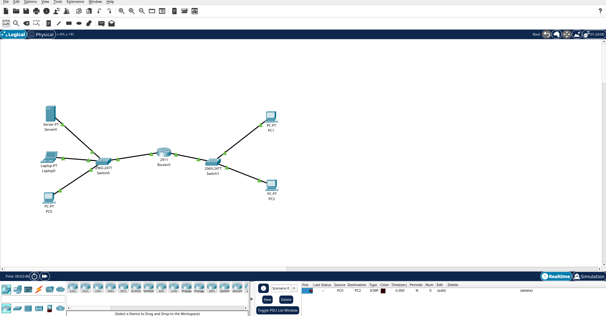
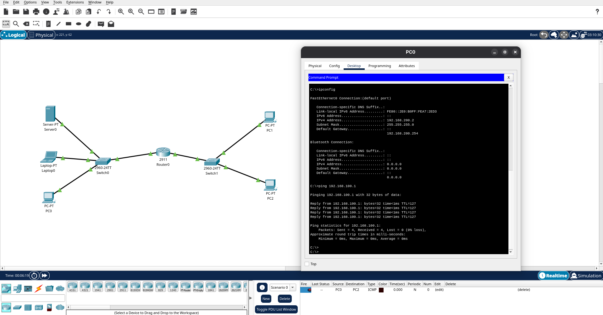
TP2 — DHCP sur plusieurs LAN
Ce TP portait sur la configuration du DHCP afin d’attribuer automatiquement des adresses IP aux machines clientes. J’ai également configuré la passerelle par défaut pour permettre la communication entre plusieurs LAN.
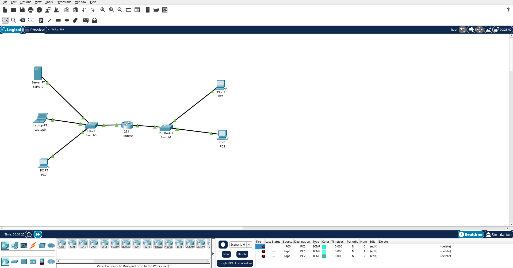
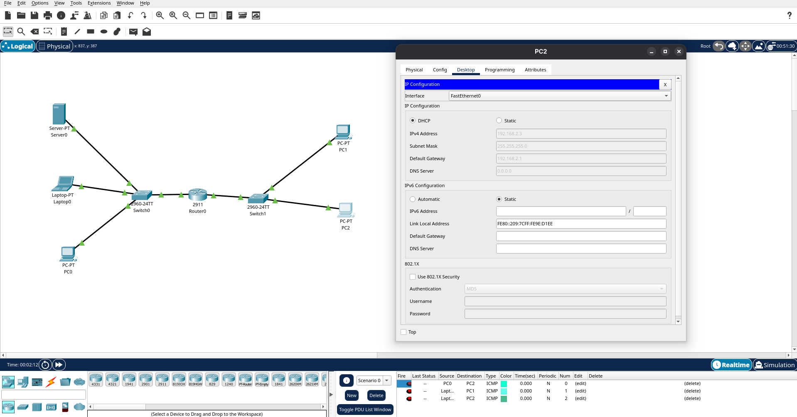
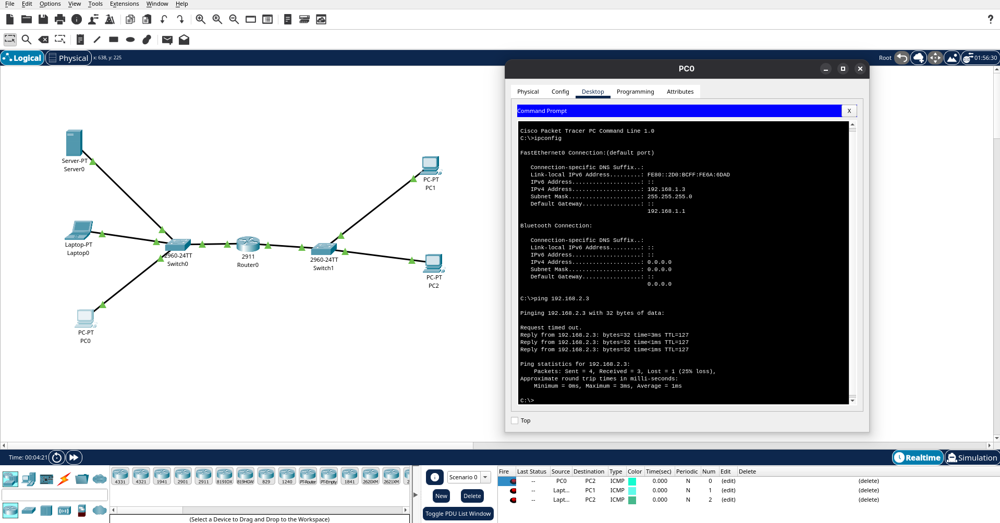
TP3 — DNS et serveur web
Ce TP avait pour objectif de configurer un serveur DNS afin d’associer des noms de machines à des adresses IP. J’ai également ajouté un serveur web et vérifié son accessibilité via son nom DNS.
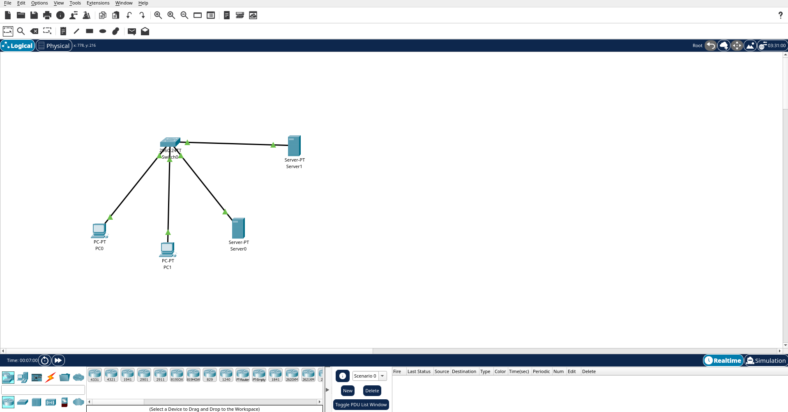
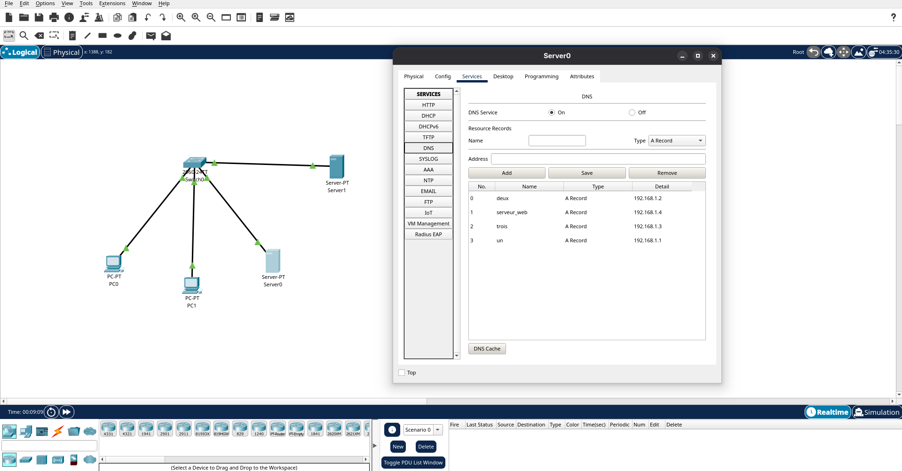
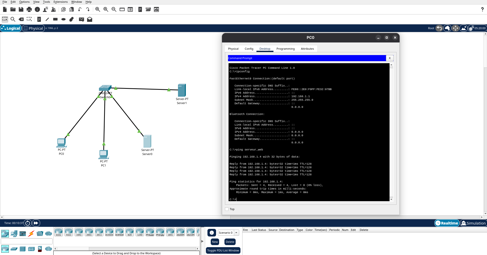
TP4 — Wi-Fi sécurisé avec WPA2-Entreprise
Ce TP portait sur la configuration d’un réseau Wi-Fi sécurisé avec WPA2-Entreprise. J’ai utilisé un serveur AAA/RADIUS pour gérer l’authentification des utilisateurs au réseau sans fil.
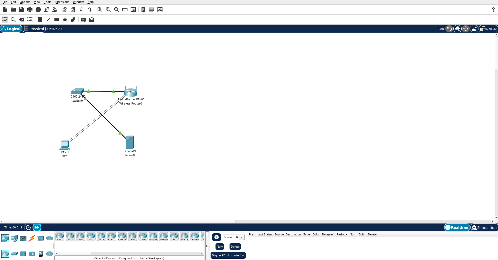
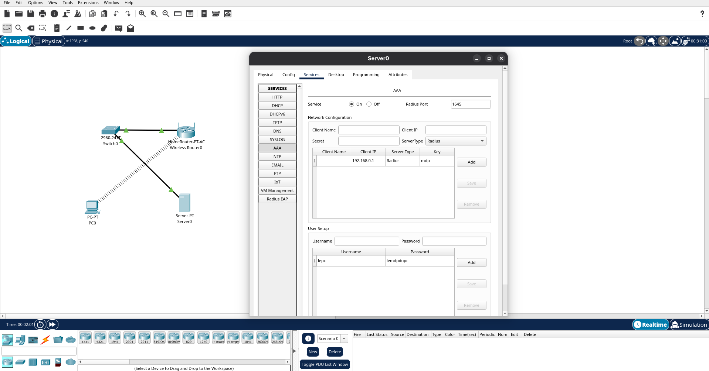
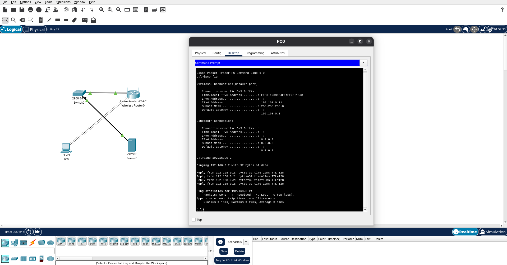
TP5 — VLAN, trunk et routage inter-VLAN
Ce TP m’a permis de travailler sur la segmentation réseau avec les VLAN. J’ai configuré plusieurs VLAN, des liens trunk entre les switchs et des sous-interfaces sur le routeur afin de permettre le routage inter-VLAN.
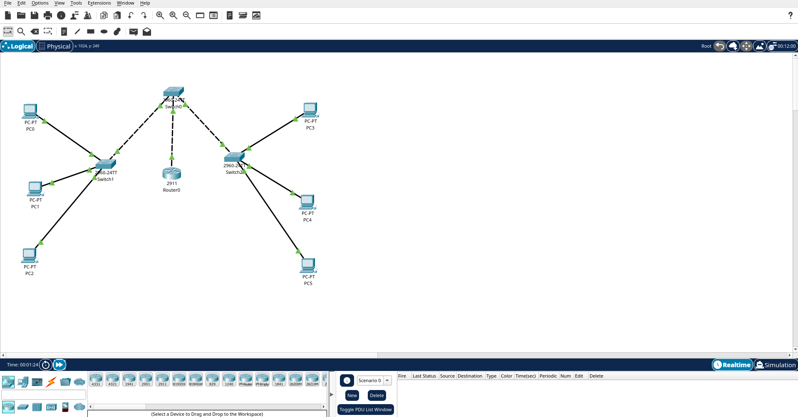
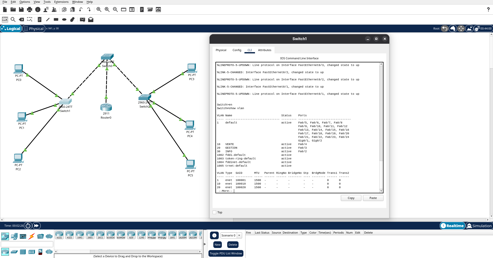
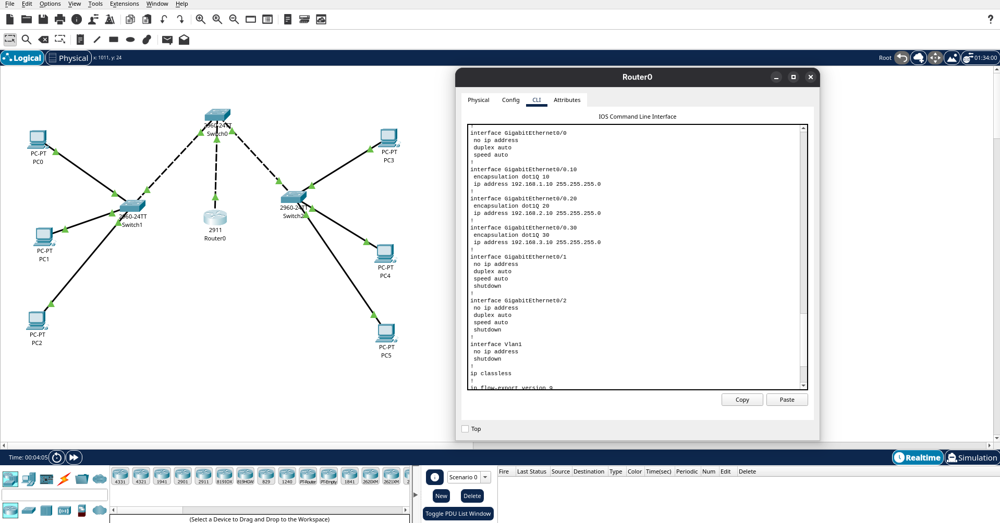
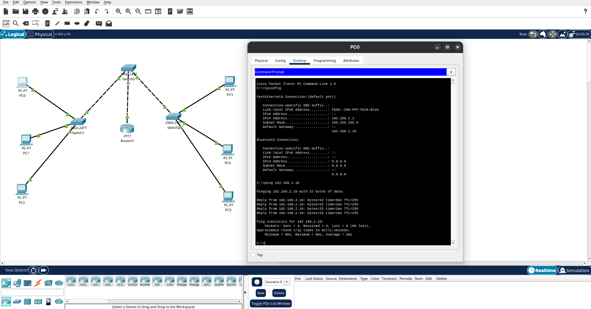
Compétences travaillées
- Conception de topologies réseau
- Configuration d’adresses IP et de passerelles
- Configuration de services DHCP et DNS
- Sécurisation d’un réseau Wi-Fi avec WPA2-Entreprise
- Configuration de VLAN, trunk et routage inter-VLAN
- Tests de connectivité avec ping et simulation Packet Tracer
Conclusion
Ces travaux pratiques m’ont permis de mieux comprendre le fonctionnement des réseaux locaux, la configuration des équipements et l’importance des services réseau comme DHCP et DNS. Les TP sur les VLAN et le Wi-Fi sécurisé m’ont aussi permis de travailler sur la segmentation et la sécurisation d’un réseau.